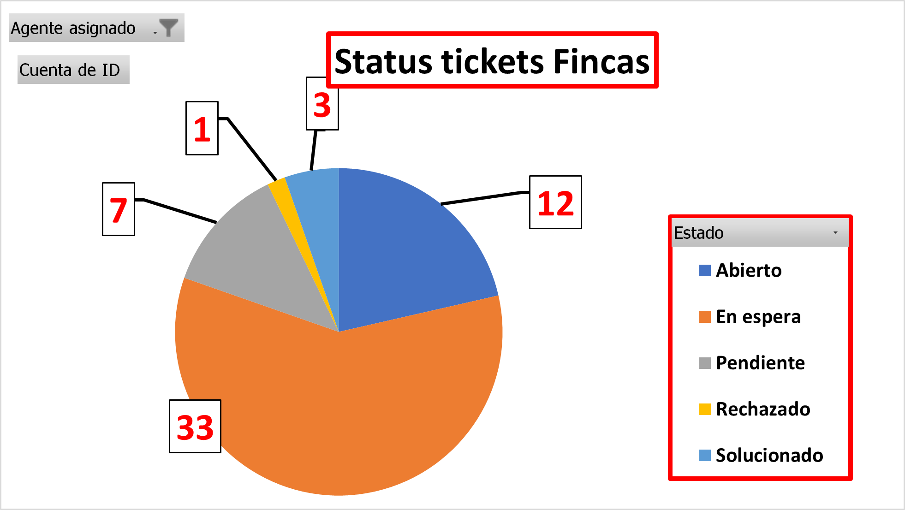

Métricas de Tickets
Estas son las métricas de tickets por agente en Izabal, hasta la fecha 29/07/2022.
Por Agente:

Agente de Fincas:

Nota: Estos resultados es del historio de pendientes 2021-2022
Información ficticia.
Elaborado por Edwing Batz.
Redes: @ebatz_
Morales, Izabal
Guatemala